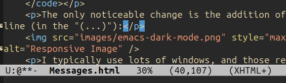

Next, I decided to actually choose the status messages I receive:
;; Turn off the default startup screen
(setq inhibit-startup-screen t)
;; Set a friendly initial message *scratch*
(setq initial-scratch-message ";; Solder & Signal\n")
;; Show the column number in the mode line
(column-number-mode)
;; Use a visible bell, not audible
(setq visible-bell t)
;; Auto-save files without nagging messages
(setq auto-save-no-message t)
;; Don’t confirm when quitting Emacs
(setq confirm-kill-emacs nil)
;; Allow Emacs to resize frames at the pixel level
;; (smoother UI on modern displays)
(setq frame-resize-pixelwise t)
;; Suppress noisy native-comp warnings
(setq native-comp-async-report-warnings-errors nil)
The only noticeable change is the addition of a column number in the mode line (in the "(...)"):
No other real changes here.
© 2025 by Bill Wear. All Rights Reserved.